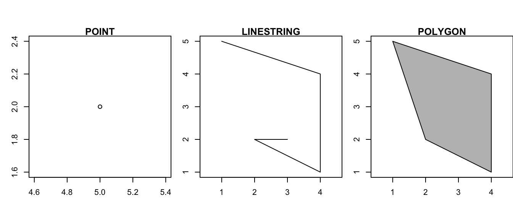
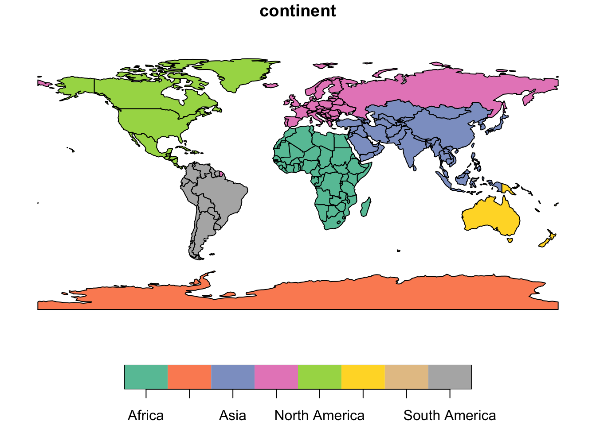
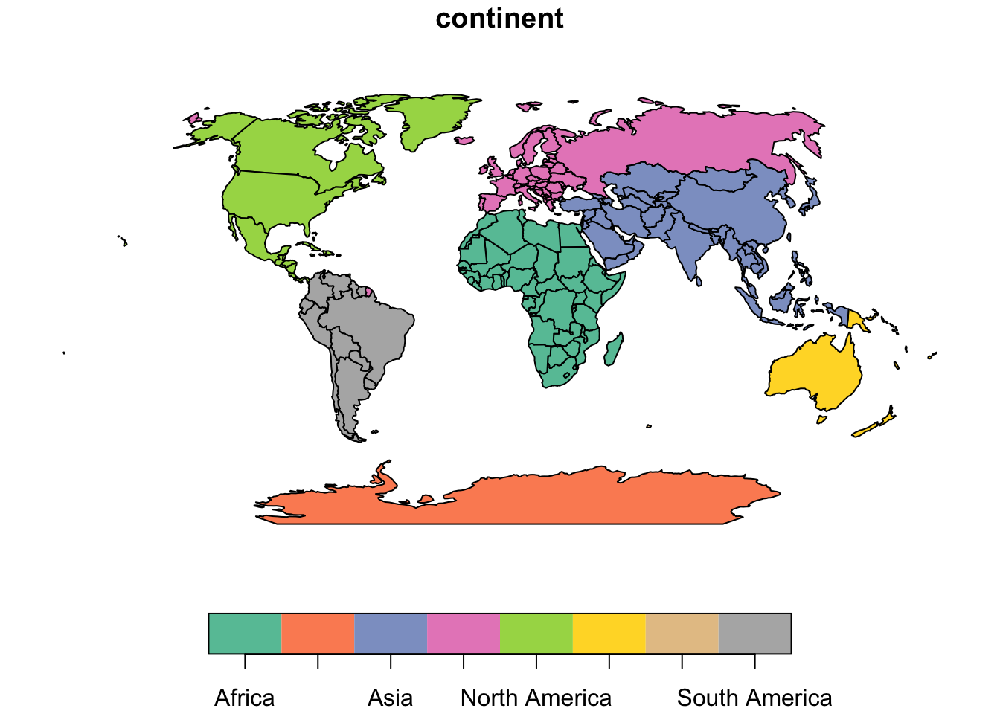
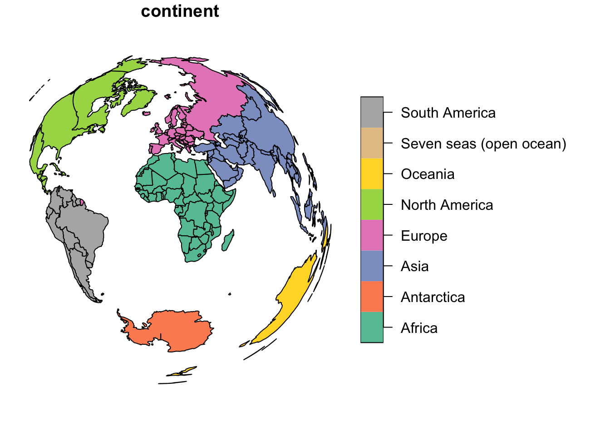

2 Spatial Data
This blocks explore spatial data, old and new. We start with an overview of traditional datasets, discussing their benefits and challenges for social scientists; then we move on to new forms of data, and how they pose different challenges, but also exciting opportunities. These two areas are covered with clips and slides that can be complemented with readings. Once conceptual areas are covered, we jump into working with spatial data in R, which will prepare you for your own adventure in exploring spatial data.
Slides can be downloaded “here”
Special about spatial data
All data is spatial - data comes from observation, and observation needs to happen somewhere and at some time. This makes all data spatial. For a lot of data, the location expressed in spatial, earth-bound coordinates of observation is not of prime importance:
- If a patient undergoes a brain scan, the location of the scanner is not important; the location of the person relative to the scanner is.
- If a person receives a positive COVID-19 test result, the location of testing may not be important for the person’s decision on whether to go into quarantine or not
- For someone trying to do contact tracing, this person’s location history may be very relevant.
Geometries
These core spatial geometries are all supported in R package sf.
- points
- lines
- polygons
- and their respective “multi” versions (which group entities of the same type into a single entity).
Geometries
The basis of every type of geometry is the point. A point is simply a coordinate in 2D, 3D or 4D space such as:
POINT (5 2)
A line string is a sequence of points with a straight line connecting the points, for example:
LINESTRING (1 5, 4 4, 4 1, 2 2, 3 2)
A polygon is a sequence of points that form a closed ring without intersection. Closed means that the first and the last point of a polygon have the same coordinates:
POLYGON ((1 5, 2 2, 4 1, 4 4, 1 5))
A polygone with a hole: POLYGON ((1 5, 2 2, 4 1, 4 4, 1 5), (2 4, 3 4, 3 3, 2 3, 2 4))
All types of objects:
There are also:
sets of polygons,
MULTIPOLYGON(((0 0,1 0,1 1,0 0)), ((3 3,4 3,4 4,3 3)))combinations of these
GEOMETRYCOLLECTION(POINT(0 1),LINESTRING(0 0,1 1))- which are inconvenient
“Good old” (geo) data
To understand what is new in new forms of data, it is useful to begin by considering traditional data. Datasets utilized in the field of social sciences exhibit several key characteristics:
Purposeful Collection: These datasets are meticulously designed and gathered with specific research objectives in mind.
Rich Information: They provide a wealth of detailed and informative data, often offering a comprehensive “rich profile and portraits of the country” under examination.
High Quality: Maintaining a high standard of data accuracy and integrity is a top priority in social science datasets.
However, it’s important to note that these datasets also come with certain limitations:
Scale and Cost: Building and maintaining such datasets can be massive undertakings, often requiring substantial financial resources.
Coarse Resolution: To safeguard privacy, data may need to be aggregated, resulting in a loss of fine-grained detail.
Slowness: The process of data collection, curation, and dissemination can be time-consuming, leading to delays in availability.
Frequency vs. Detail: Typically, as datasets become more detailed, their availability may decrease, making it challenging to access highly specific data on a regular basis.
New forms of (geo) data
New forms of (geo) data are tied into the geo-data revolution. Data is often accidental, which is initially generated for various purposes but becomes available for analysis as a side effect. This data is incredibly diverse, varying in resolution and quality, but holds the potential for much greater detail in both spatial and temporal dimensions.
Have a look at the two following articles:
Data ex Machina: Introduction to Big Data by Lazer & Radford
Accidental, open and everywhere by Arribas-Bel
All maps are wrong
If you’re still not convinced, try have a mess around with this link.
Coordinates
With coordinates, we usually think a numbered measured along a ruler, where the ruler might be an imaginary line: it has an offset (0), a unit (m), and a constant direction. For spatial data we could have two imaginary lines perpendicular to each other, and we call this Cartesian space. Distance between \((x_1,y_1)\) and \((x_2,y_2)\) in Cartesian space is computed by Euclidean distance: \[\sqrt{(x_1-x_2)^2+(y_1-y_2)^2}\]
Left: geocentric coordinates (Cartesian, three-dimensional, units metres); Right: spherical/ellipsoidal coordinates (angles, units degrees)

Euclidean distances do not work for ellipsoidal coordinates: one degree longitude at the equator is about 111 km, at the poles it is 0 km.
What does coordinate reference system mean?
CRSs if disregarded can lead to massive problems. CRSs allow you to make the right assumptions without having to guess. They specify what coordinates mean.
“Data are not just numbers, they are numbers with a context” (Cobb & Moore)
Coordinate reference systems provide the context of coordinates:
- They tell whether the coordinates are ellipsoidal (angles), or derived, projected (Cartesian) coordinates
- In case they are projected, they detail the kind of projection used, so that the underlying ellipsoidal coordinates can be recovered
- In any case, they point out which ellipsoidal model (datum) was used.
Knowing this we can:
- Convert between projected and unprojected, or to another projection
- Transform from one datum to another
- Combine the coordinates with any other coordinates that have a coordinate reference system
Projection and transformation
Established CRSs captured by EPSG codes are well-suited for many applications. A long and growing list of projections has been developed. Here are a few examples applied to the world so you can see that maps do change quite a bit when different projections are applied.
The Mollweide projection.
Warning: package 'spData' was built under R version 4.3.3Code
world_mollweide = st_transform(world, crs = "+proj=moll")
plot(world["continent"])
On the other hand, when mapping the world, it is often desirable to have as little distortion as possible for all spatial properties (area, direction, distance). One of the most popular projections to achieve as little distortion as possible is the Winkel tripel projection
Code
world_wintri = lwgeom::st_transform_proj(world, crs = "+proj=wintri")
plot(world_wintri["continent"])
Specific PROJ parameters can be modified in most CRS definitions - you will most likely never use this. The below code transforms the coordinates to the Lambert azimuthal equal-area projection centered on longitude and latitude of 0.
Code
world_laea1 = st_transform(world,
crs = "+proj=laea +x_0=0 +y_0=0 +lon_0=0 +lat_0=0")
plot(world_laea1["continent"])
Further readings
Watch: Nathan Yau’s Flowing Data
- The Problem with our maps by Nick Routely
- Geocomputation with R
- Spatial Data Science